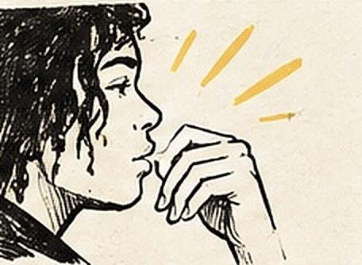

Deux heures d’écriture à la Maison des adolescents de Bordeaux
À la Maison des adolescents de Bordeaux Peyberland, le groupe change à chaque séance. Deux heures, une dizaine de participants, et un texte à écrire les uns pour les autres.
Auteur : Esope · Intervenants slam : Esope
La Maison des adolescents de Bordeaux Peyberland accueille des jeunes et des jeunes adultes, souvent orientés par la Mission locale. J'y anime un atelier d'écriture au format court : deux heures, une dizaine de participants, et un groupe qui n'est jamais le même d'une fois sur l'autre. Autant dire que rien ne se construit sur la durée : tout doit tenir dans la séance.
Le contexte : écrire sans connaître le groupe de la veille
Dans une classe, on peut s'appuyer sur ce qui a été fait la semaine précédente. Ici, non. Chaque séance recommence à zéro, avec des jeunes qui arrivent pour des raisons très différentes : certains sont là par curiosité, d'autres parce qu'un éducateur le leur a proposé, quelques-uns parce qu'ils écrivent déjà chez eux et n'osent pas trop le dire. C'est une contrainte, mais elle a un avantage : personne ne traîne d'étiquette.
J'ai choisi d'orienter ces séances vers le battle de compliments. Pour un public qui peut arriver sur la défensive, c'est le format le plus désarmant que je connaisse : on écrit les uns pour les autres, et la première chose qu'on reçoit du groupe, c'est du rire et de la reconnaissance.

Le déroulement de la séance
Le minutage est serré, donc il est toujours le même. Dix minutes debout pour casser la glace avec des jeux oraux, sans feuille ni stylo. Vingt minutes d'observation et de collecte : on note des détails concrets sur la personne qu'on aura en face. Quarante minutes d'écriture, pendant lesquelles je passe de table en table — c'est là que se fait le vrai travail, texte par texte. Puis trente minutes de mise en voix et de confrontation, et un quart d'heure de clôture.
La consigne d'écriture tient en une phrase : « trouve ce que cette personne fait mieux que toi, et dis-le de façon qu'on l'imagine ». Les participants ont été amenés à chercher du précis plutôt que du flatteur, ce qui est beaucoup plus difficile — et beaucoup plus efficace.
Les techniques travaillées
En deux heures, je concentre sur trois outils : la comparaison, la chute et le rythme. La comparaison parce qu'elle est immédiatement accessible et qu'elle fait tout le travail d'image. La chute parce qu'un texte court vit ou meurt sur sa dernière ligne. Le rythme parce que c'est ce qui sépare un texte lu d'un texte dit. Le reste — construction longue, jeux de rimes internes, souffle — appartient aux formats plus longs, comme un projet slam sur plusieurs séances.
Ce que la séance permet de travailler
Cette séance offre un espace pour formuler une idée devant des gens qu'on ne connaît pas, écouter avec attention, et recevoir un retour positif sans le désamorcer par une blague. Pour beaucoup de participants, l'exercice difficile n'est pas d'écrire un compliment, mais d'en entendre un jusqu'au bout. C'est souvent là que la séance devient intéressante.

Le moment marquant
Une participante a demandé, à la fin, si elle pouvait garder la feuille où quelqu'un avait écrit sur elle. Puis une deuxième. Puis tout le monde. On a terminé la séance à échanger les brouillons plutôt qu'à les ramasser. Je ne l'avais pas prévu, et je l'ai gardé depuis : les textes repartent avec ceux qu'ils décrivent.
Ce que ces séances permettent d’explorer
Ce qui m'intéresse dans ce format, c'est la démonstration qu'il fait : il ne faut pas beaucoup de temps pour qu'un jeune produise un texte dont il est fier, il faut un cadre clair et une raison d'écrire. Si votre structure accueille un public en flux — mission locale, accueil de jour, foyer — ce format court se cale facilement dans une programmation existante.